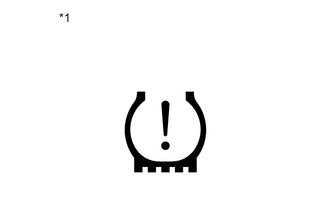
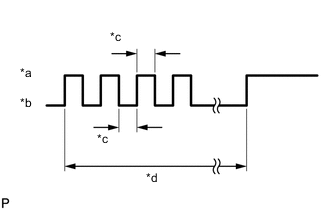
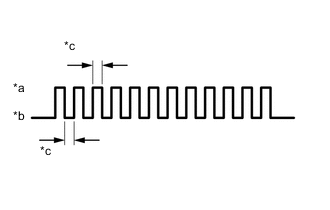
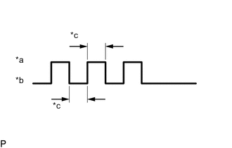
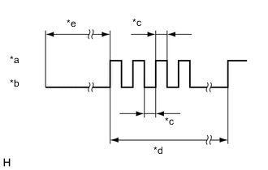
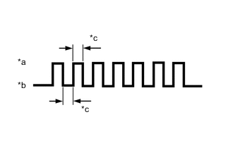

CHECK WARNING LIGHT
Note
When there is a problem with the tire pressure warning system, the tire pressure warning light blinks at 0.5 second intervals, and illuminates after 1 minute.
When the malfunction has been corrected, the tire pressure warning light goes off.
When the tire pressure warning light illuminates, immediately check the tire pressure of the tires and adjust them to the specified value.
After the power switch is turned on (IG), the tire pressure warning light illuminates for 3 seconds and then goes off. If the warning light does not illuminate for 3 seconds, proceed to the troubleshooting for the tire pressure warning light circuit.

| *1 | Tire Pressure Warning Light |
Turn the power switch on (IG).
Check that the tire pressure warning light illuminates for 3 seconds.
WHAT TO CONSIDER WHEN TIRE PRESSURE WARNING LIGHT ILLUMINATES
When the tire pressure warning light does not go off, or when it illuminates during driving, check the tire pressure. If the tire pressure warning light illuminates within several hours after adjusting the tire pressure, a tire may have a slow air leak.
The system is disabled under the following conditions (when the condition returns to normal, the system will work properly).
When all of the tire and wheel assemblies that have tire pressure warning valve and transmitters registered with the tire pressure warning ECU and receiver have not been installed.
When all of the transmitter ID codes are not registered with the tire pressure warning ECU and receiver.
When the tire pressure warning valve and transmitter battery is depleted (Battery life is 10 years).
The system may become disabled under the following conditions (when the condition returns to normal, the system will work properly).
When electric devices or facilities using similar radio frequencies are nearby.
When a wireless device or other equipment operating at a similar frequency is in use in the vehicle.
When a window tint that affects radio wave signals is installed.
When there is a lot of snow or ice on the vehicle, in particular, around the wheels or wheel housing.
When non-genuine wheels are used.
When tire chains are used.
When aftermarket tire repair sealant is used.
CAUTION:
After use of tire repair sealant, replacement of the tire pressure warning valve and transmitter is required to ensure normal system operation. (Normal system operation cannot be ensured by only repairing or replacing the tire.)
TIRE PRESSURE WARNING LIGHT AND INDICATOR CHART

| *a | ON |
| *b | OFF |
| *c | 0.5 sec. |
| *d | 1 minute |
*1: Blinks at 0.5 second intervals, and stays illuminated after 1 minute.

| *a | ON |
| *b | OFF |
| *c | 0.125 sec. |
*2: Blinks at 0.125 second intervals.

| *a | ON |
| *b | OFF |
| *c | 1 sec. |
*3: Blinks 3 times at 1 second intervals.

| *a | ON |
| *b | OFF |
| *c | 0.5 sec. |
| *d | 1 minute |
| *e | 10 sec. |
*4: Goes off for 10 seconds to check the connection of the ECU connector, and then blinks at 0.5 second intervals, and stays illuminated after 1 minute.

| *a | ON |
| *b | OFF |
| *c | 0.25 sec. |
*5: Blinks at 0.25 second intervals.
NORMAL MODE DTC
DTCs are stored in the tire pressure warning ECU and receiver and output by blinking the tire pressure warning light or by using the GTS.
TEST MODE (SIGNAL CHECK MODE) DTC
By switching from normal mode into test mode (signal check mode), the tire pressure warning ECU and receiver, each tire pressure warning valve and transmitter and tire pressure warning reset switch can be inspected.